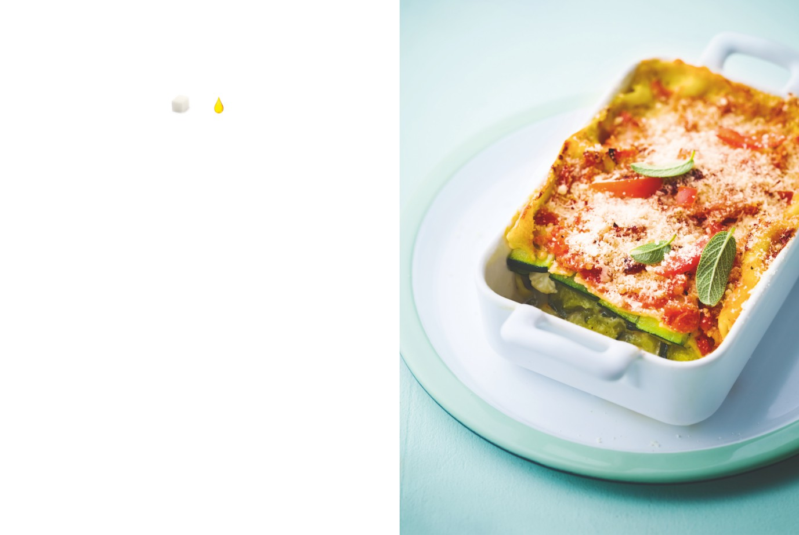

Lasagnes de légumes
APPORTS NUTRITIONNELS PAR PERSONNE
12
1
carrés
carré
de sucre
de graisse
PRÉPARATION : 35 minutes / CUISSON : 1 heure 10
Ingrédients pour 4 personnes
1.
Délayez petit à petit la farine dans un peu de lait sans faire
de grumeaux. Ajoutez le reste de lait en fouettant bien,
30 g de farine
puis le bouillon de légumes. Faites chauffer sur feu moyen
40 cl de lait demi-écrémé
en remuant jusqu’à ce que la sauce épaississe. Faites-la mijoter
60 cl de bouillon de légumes
quelques minutes en ajoutant sel, poivre blanc du moulin
10 lasagnes sans précuisson
et muscade râpée. La sauce doit être assez liquide. Retirez du feu.
200 g de ricotta à base de lait écrémé
1 sachet de parmesan râpé
1 filet d’huile d’olive
2.
Préparez les légumes comme indiqués dans la liste
Sel, poivre blanc du moulin,
d’ingrédients. Préchauffez le four à 180 °C (th. 6).
noix de muscade râpée
3.
Étalez 2 cuillerées de sauce dans un plat à gratin rectangulaire.
Les légumes
Déposez-y une couche de lasagnes. Recouvrez d’une couche
4 petites courgettes taillées en tranches
de légumes (sans les tomates) en les arrangeant selon votre choix,
fines dans le sens de la longueur
ajoutez un peu de ricotta, puis saupoudrez-les de parmesan
250 g de chou-fleur cru taillé en lamelles
et recouvrez d’une couche de sauce. Recouvrez d’une autre couche
300 g d’épinards frais, lavés et équeutés,
de lasagnes, et recommencez l’opération jusqu’à épuisement
blanchis 1 minute à l’eau bouillante
des ingrédients. Terminez par les tomates et le reste de parmesan.
1 oignon finement émincé
Ajoutez un filet d’huile d’olive et faites cuire 1 heure au four.
2 gousses d’ail hachées
Laissez reposer 10 minutes avant de servir.
3 tomates pelées, épépinées, hachées
L’ASTUCE DE CHEF
Vous pouvez varier sur les légumes, préparer des lasagnes
« tout verdure » par exemple avec épinards, cresson, roquette,
pourpier, fanes de radis ou de navets… N’hésitez pas à faire
une sauce bien liquide car les lasagnes sans précuisson
doivent absorber beaucoup d’humidité.
56
Légumes